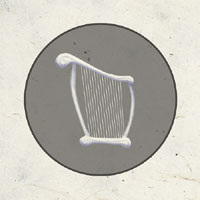
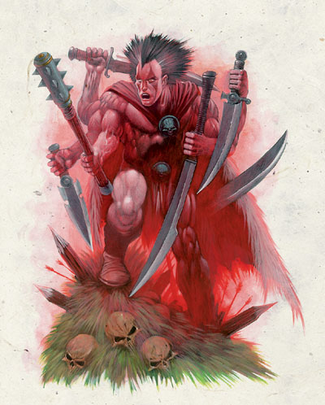
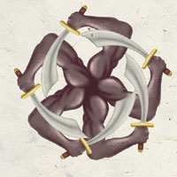
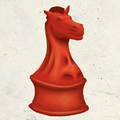
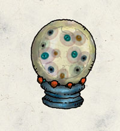
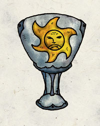
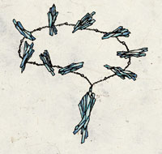
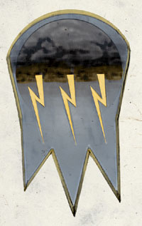
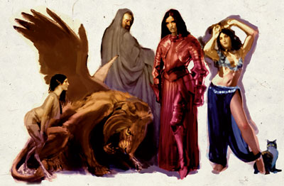

【微弱神力 Demigod】
前言：一般来说，微弱神力的神o在费伦大陆上的影响力，比起前述的三个阶级，可以说是微弱许多。一方面是因为k们的神职不甚重要，一方面也是因为其信徒数量较少，通常都是地域性的信仰所致。
凡德．维恩佛斯培 Finder Wyvernspur
【亦可译为 发现者．翼龙之刺】（艺术与爬虫之神）
别称：无名的吟游诗人 The Nameless Bard
圣徽： 在灰色圆环内的银色竖琴

居住界域：月之门 Gates of the Moon
阵营：混乱中立 CN
神职：生命的周期 cycle of life，各种艺术 transformation of art，爬虫动物 saurials
信徒：艺术家，吟游诗人，爬虫类动物
牧师阵营：混乱善良 CG，混乱中立 CN，混乱邪恶 CE
神域：混乱 Chaos，媚惑Charm，复苏Renewal，爬虫Scalykind
喜好武器：歌咏之剑Sword of Song（长剑longsword）
卡瑞斯 Garagos （战争之神）

别称：掠夺者The Reaver，众兵器之主Master of All Weapons，战争之王Lord of War
圣徽： 手执弯刀的五只手，围成圆圈

居住界域：战士之眠Warrior’s Rest
阵营：混乱中立CN
神职：战争War，武器技巧skill-at-arms，毁灭destruction，掠夺plunder
信徒：野蛮人，战士，游侠，士兵，间谍，斗士
牧师阵营：混乱善良CG，混乱中立CN，混乱邪恶CE
神域：混乱Chaos，毁灭Destruction，力量Strength，战争War
喜好武器：触手The Tentacus（长剑）
加葛斯 Gargauth（酷吏之恶魔）
别称：九层地狱的第十位君王The Tenth Lord of Nine，恶魔深坑的遗落之王the Lost Lord of the Pit，隐藏之王the Hidden Lord
圣徽： 破碎的动物号角

居住界域：物质界Material
阵营：守序邪恶 LE
神职：背叛betrayal，残酷cruelty，政治腐化political corruption，强大的酷吏powerbroker
信徒：腐化的君王与政客，术士，卖国贼
牧师阵营：守序中立LN，守序邪恶LE，中立邪恶NE
神域：媚惑Charm，邪恶Evil，守序Law，诡术Trickery
喜好武器：腐败者Corruptor（匕首或投掷匕首dagger or throwing dagger）
桂伦．风暴 Gwaeron Windstrom（追踪之神）
别称：追踪大师Master of Tracking，从不造访星界的追踪者the Tracker Who Never Gose Astray
圣徽： 爪印，中央有白星
居住界域：自然之殿House of Nature
阵营：中立善良NG
神职：追踪tracking，北地的游侠rangers of the North
信徒：德鲁依，游侠，巨魔猎人
牧师阵营：守序善良LG，中立善良NG，混乱善良CG
神域：动物Animal，善良Good，知识Knowledge，植物Plant，旅行Travel
喜好武器：烈焰之心Flameheart（双手巨剑greatsword）
霍尔 Hoar（复仇之神）
别称：毁灭带来者Doombringer，三雷之王Lord of Three Thunders
圣徽： 手执双面花纹银币的黑色手套

居住界域：毁灭与绝望之荒原The Barrens of Doom and Despair
阵营：守序中立LN
神职：复仇reveger，报应retribution，公正的赏罚poetic justice
信徒：刺客，战士，盗贼，复仇者
牧师阵营：守序善良LG，守序中立LN，守序邪恶LE
神域：宿命Fate，守序Law，报应Retribution，旅行Travel
喜好武器：复仇之螫Retribution’s Sting（标枪javelin）
耶各Jergal（远古的死亡之神）
别称：万物终结之王Lord the End of Everything，末日纪录者Scribe of the doomed，冷酷者the Pitiless One
圣徽： 置于滚动条与鹅毛笔上的无下颚骷髅

居住界域：朦胧之域The Fugue Plane
阵营：守序中立LN
神职：宿命论fatalism，高尚的葬礼proper burial，坟墓的守卫guardian of tombs
信徒：武僧，死灵师，圣武士
牧师阵营：守序善良LG，守序中立LN，守序邪恶LE
神域：宿命Fate，守序Law，长眠Repose，符文Rune，折磨Suffering
喜好武器：白色手套A white glove（巨镰scythe）
芮 Lurue （独角兽女神）

别称：独角兽之后the Unicorn Queen，智性神兽之后the Queen of Talking Beasts
圣徽： 独角兽与其鬃毛缠绕的新月

居住界域：自然之殿House of Nature
阵营：混乱善良CG
神职：智性神兽talking beasts，有智能的非人生物intelligent nonhumanoid creatures
信徒：德鲁伊，表演艺人，流浪者，游侠，旅行者，独角兽骑士
牧师阵营：中立善良NG，混乱善良CG，混乱中立CN
神域：动物Animal，混乱Chaos，善良Good，医疗Healing
喜好武器：独角兽之角A unicorn horn（短矛）
努比恩Nobanion（雄狮之神）
别称：火鬃之王Lord Firemane，万兽之王King of the Beast
圣徽： 以绿盾为背景的狮首

居住界域：自然之殿House of Nature
阵营：守序善良LG
神职：王权Royalty，狮子与猫科动物lions and feline beasts，善良的野兽good beasts
信徒：德鲁伊，战士，领导者，圣武士，游侠，士兵，教师，半狮人Wemics
牧师阵营：守序善良LG，中立善良NG，守序中立LN
神域：动物Animal，善良Good，守序Law，贵族Nobility
喜好武器：狮之首A lion’s head（重型十字稿heavy pick）
红骑士Red Knight（谋略女神）
别称：谋略女士Lady of Strategy
圣徽： 红色西洋棋的骑士，瞳孔部分为星型

居住界域：战士之眠 Warrior’s Rest
阵营：守序中立 LN
神职：谋略 strategy，计划 planning，战术 tactics
信徒：战士，赌徒，武僧，谋略家，策士
牧师阵营：守序善良LG，守序中立LN，守序邪恶LE
神域：守序Law，贵族Nobility，计划Planning，战争War
喜好武器：查验之伴Checkmate（长剑longsword）
萨弗拉斯Savras（预言之神）
别称：全见者The All-Seeing，预言之王Lord of Divination，第三眼He of the Third Eye
圣徽： 内含多种眼睛的水晶球

居住界域：咒文之域 Dweomerheart
阵营：守序中立 LN
神职：预言divination，命运fate，真相truth
信徒：预言师，法官，武僧，寻找真相之人，施法者
牧师阵营：守序善良LG，守序中立LN，守序邪恶LE
神域：宿命Fate，知识Knowledge，守序Law，魔法Magic，法术Spell
喜好武器：萨弗拉斯之眼 The eye of Sarvas（匕首dagger）
夏芮丝Sharess（猫与舞蹈女神）
别称：舞蹈女士The Dancing Lady，猫之母Mother of Cats
圣徽： 女性的娇艳双唇

居住界域：明水之域 Brightwater
阵营：混乱善良 CG
神职：快乐主义hedonism，感官的渴望sensual fulfillment，大型的欢乐庆典festhalls，猫cats
信徒：吟游诗人，快乐主义者，感官主义者
牧师阵营：中立善良NG，混乱善良CG，混乱中立CN
神域：混乱Chaos，媚惑Charm，善良Good，旅行Travel，诡术Trickery
喜好武器：巨猫爪A great cat’s paw（附爪的护腕claw bracer）
希昂莉雅Shiallia（芽之女神）[至高森林地方信仰]
别称：林间空地的舞者Dancer in the Glades，至高森林之女Daughter of the High Forest，森林之女the Lady of the Woods
圣徽： 金色的橡实
居住界域：自然之殿 House of Nature
阵营：中立善良NG
神职：森林中的空地woodland glades，森林的丰饶woodland fertility，萌芽growth，至高森林the High Forest，绝冬城森林Neberwinter Wood
信徒：德鲁伊，农夫，林间住民，园丁，新婚夫妻
牧师阵营：守序善良LG，中立善良NG，混乱善良CG
神域：动物Animal，善良Good，植物Plant，复苏Renewal
喜好武器：林之友Forest’s Friend（长木杖quarterstaff）
希恩渥丝Siamorphe（贵族之女神）
别称：天授神权 The Divine Right
圣徽： 绘有金色太阳的银制高脚杯

居住界域：三神之殿 House of the Triad
阵营：守序中立 LN
神职：贵族nobles，正统rightful rule of nobility，人类的王权human royalty
信徒：领导者，博学者，贵族，身居高位之人
牧师阵营：守序善良LG，守序中立LN，守序邪恶LE
神域：知识Knowledge，守序Law，贵族Nobility，计划Planning
喜好武器：高贵王权Noble Might（轻型硬头锤 light mace）
缇雅玛特 Tiamat（恶龙女神）
别称：龙后The Dragon Queen，复仇女神Nemesis of the Gods，黑暗女士the Dark Lady
圣徽： 五头龙

居住界域：Heliopolis
阵营：守序邪恶 LE
神职：邪恶龙族evil dragons，邪恶的爬虫类evil reptiles，贪婪greed，切森塔地区Chessenta
信徒：彩色龙，龙巫教，邪恶龙族，邪恶的爬虫类，战士，术士，盗贼，破坏文艺者
牧师阵营：守序中立 LN，守序邪恶 LE，中立邪恶 NE
神域：邪恶Evil，守序Law，爬虫Scalykid，暴政Tyranny
喜好武器：龙之首A Dragon’s head（重型十字稿heavy pick）
乌楼提鲁Ulutiu（北极之神）
别称：冰中之王The Lord in the Ice，灵界眠者the Eternal Sleeper，巨人族之父Father of the Giant’s Kin
圣徽： 由蓝白色冰晶串成的项链

居住界域：星界 Astral
阵营：守序中立 LN
神职：冰河glaciers，极地polar environments，极地居民arctic dwellwes
信徒：极地居民，德鲁伊，历史学家，领导者，教师，游侠
牧师阵营：守序善良LG，守序中立LN，守序邪恶LE
神域：动物Animal，守序Law，海洋Ocean，保护Protection，力量Strength
喜好武器：冰洋鱼叉Harpoon of the Cold Sea（长矛longspear或短矛shortspear）
维尔寇Valkur（海战之神）
别称：强大威能The Might，浪涛之将Captain of the Waves
圣徽： 以乌云与三道闪电为花纹的盾牌

居住界域：战士之眠 Warrior’s Rest
阵营：混乱善良 CG
神职：水手sailors，船只ships，顺风favorable winds，海战naval cambat
信徒：战士，盗贼，水手
牧师阵营：中立善良 NG，混乱善良CG，混乱中立 CN
神域：风Air，混乱Chaos，善良Good，海洋Ocean，保护Protection
喜好武器：将军的弯刀The Captain’s Cutlass（弯刀cutlass）
维沙伦Velsharoon （巫妖之神）

别称：自夸者The Vaunted，死灵大法师Archmage of Necromancy，被弃地窖之王Lord of the Forsaken Crypt
圣徽： 戴着王冠咧嘴大笑的巫妖头骨，背景为实心的黑色六角形
居住界域：魔法之殿 Dweomerheart
阵营：中立邪恶 NE
神职：死灵术Necromancy，死灵法师necromancers，邪恶的巫妖evil lichs，不死 undeath
信徒：巫妖，死灵法师，以不死知识追求永生之人，龙巫教
牧师阵营：守序邪恶LE，中立邪恶NE，混乱邪恶CE
神域：死亡Death，邪恶Evil，魔法Magic，不死Undeath
喜好武器：死灵骷髅之杖Skull Staff of the Necromancer（长木杖quarterstaff）
以下为部分无个人照的神o大合照
众神群像 1

由左至右 分别是 风元素女神 阿卡狄 [强大神力]
酷吏之魔 加葛斯 [微弱神力]
水泉女神 爱达丝 [弱等神力]
艺术之神 凡德 [微弱神力]
土元素之神 谷蓝巴 [强大神力]
众神群像 2

由左至右 分别是 水元素之神 依斯提悉亚 [强大神力]
远古死神 耶各 [微弱神力]
追踪之神 桂伦．风暴 [微弱神力]
复仇之神 霍尔 [微弱神力]
音乐之神 密黎尔 [弱等神力]
众神群像 3

由左至右 分别是 芽之女神 希昂莉雅 [微弱神力]
雄狮之神 努比恩 [微弱神力]
预言之神 萨弗拉斯 [微弱神力]
谋略女神 红骑士 [微弱神力]
猫舞女神 夏芮丝 [微弱神力]
众神群像 4

由左至右 分别是 北极之神 乌楼提鲁 [微弱神力]
恐龙之神 乌塔欧 [强大神力]
贵族女神 希恩渥丝 [微弱神力]
恶龙女神 缇雅玛特 [微弱神力]
海战之神 维尔寇 [微弱神力]
附带一提 微弱神力中的远古死亡之神 耶各
就是当初把神力让渡给死亡三神(班恩 巴尔 米尔寇)的古神